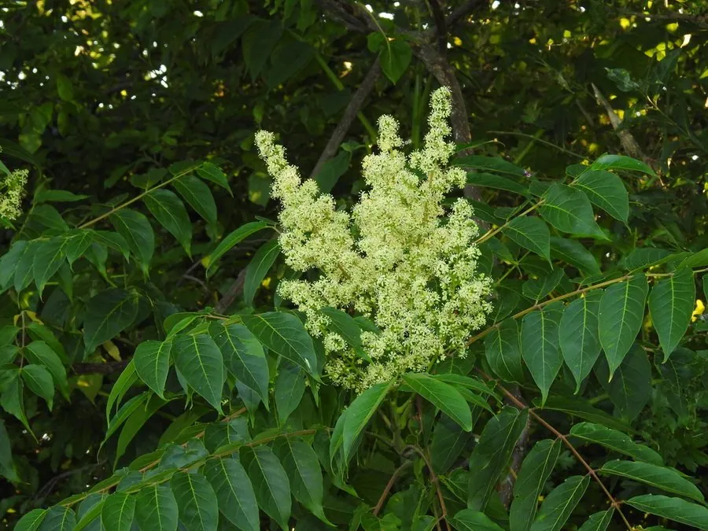

乔木 · 植物界
臭椿 Ailanthus altissima

中国原产的落叶乔木，生长迅速、耐旱耐污染，叶片揉碎有异味，是荒山绿化与工业区绿化的先锋树种。
- 分类
- 门被子植物门纲木兰纲目无患子目科苦木科属臭椿属
- 栖息环境
- 海拔 2000 米以下的山坡、村旁与城镇，耐寒耐旱耐污染
- 地理分布
- 中国北部、中部及东亚地区广泛分布，世界各地多有引种
- 保护级别
- 暂无评估；中国未列入国家重点保护野生植物名录
物种志
臭椿为落叶乔木，高可达 20 m，树皮灰褐色、平滑或纵裂；奇数羽状复叶，小叶 13–25 枚，卵状披针形，基部具 1–2 对粗齿，齿端有腺体，揉碎后散发异味。花期 5–6 月，圆锥花序顶生，花小、黄绿色；果实为翅果，长圆形，成熟时浅黄褐色或红褐色，成串挂在枝头，可宿存至冬季。
臭椿原产中国北部、中部及东亚地区，中国各地常见，喜光、耐寒、耐旱、耐瘠薄，对二氧化硫等有害气体抗性强，生长迅速，是荒山造林与工业区绿化的先锋树种。木材轻软、易于加工，可供家具、农具与造纸用；树皮、根皮与果实可入药，中药“椿根皮”“凤眼草”有清热燥湿之效；叶可饲养樗蚕。臭椿在欧美被引种后因繁殖力强而成为入侵树种，需要加以管理。
形态与习性
- 株高可达 20 m，树皮灰褐色
- 花期5–6 月，圆锥花序黄绿色
- 果期9–10 月，翅果成串宿存
- 光照喜光，不耐长期荫蔽
- 水分耐旱，怕长期积水
- 土壤适应性强，耐瘠薄
- 主要用途荒山造林与工业区绿化、木材制家具农具、根皮果实入药
趣味知识
- 臭椿的叶片揉碎后有异味，与有香气的香椿正好相反，这是区分二者的关键。
- 臭椿生长极快、耐旱耐污染，是工业区与荒山绿化的先锋树种。
- 臭椿的翅果成串挂在枝头，成熟时呈红褐色，可宿存到冬季。
- 臭椿被引种到欧美后繁殖力极强，已被列入入侵物种名单。